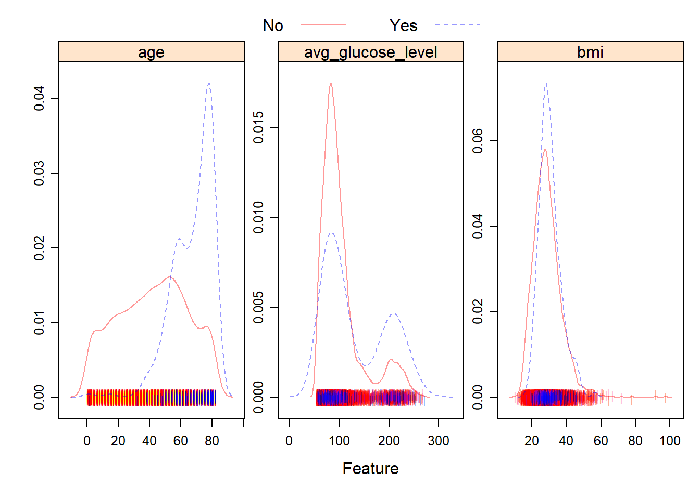
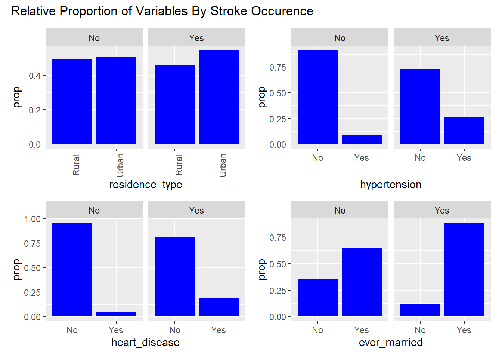
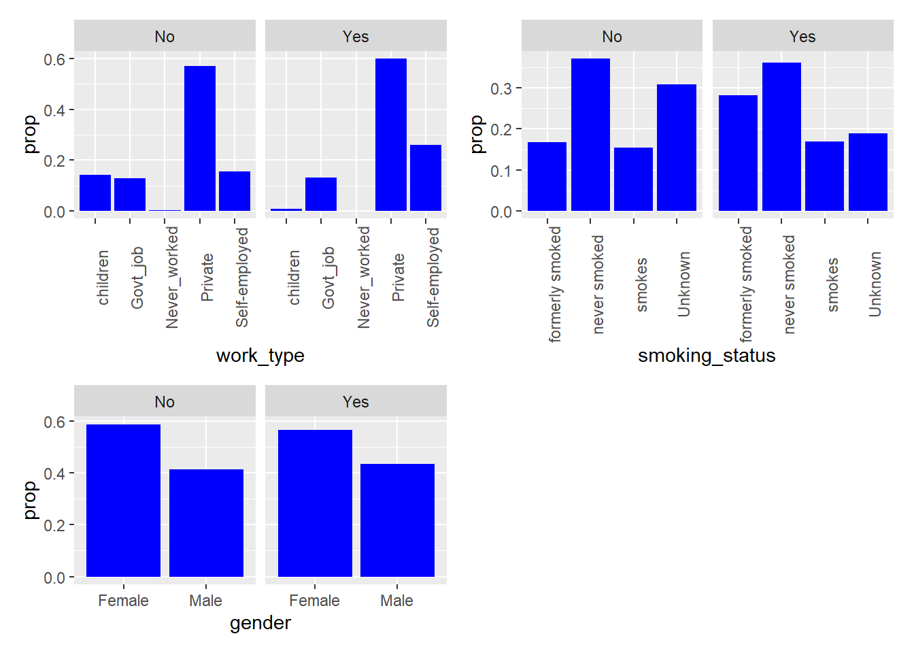
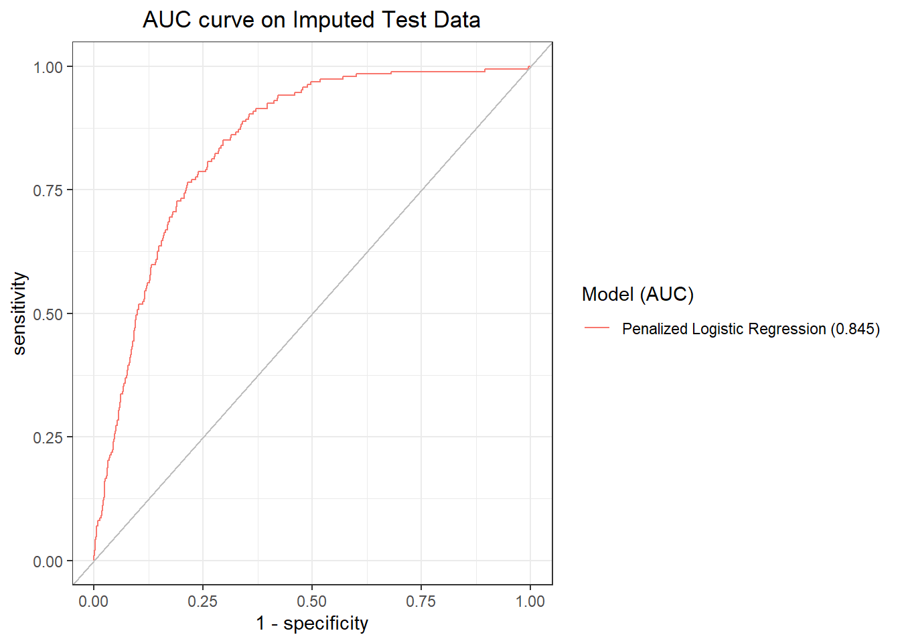
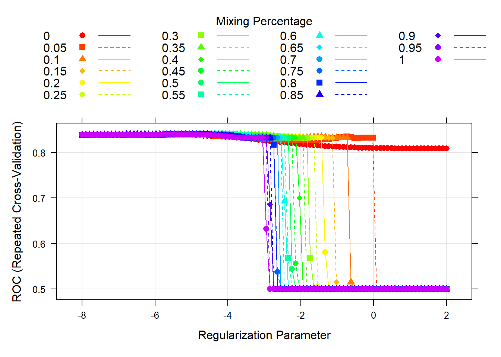
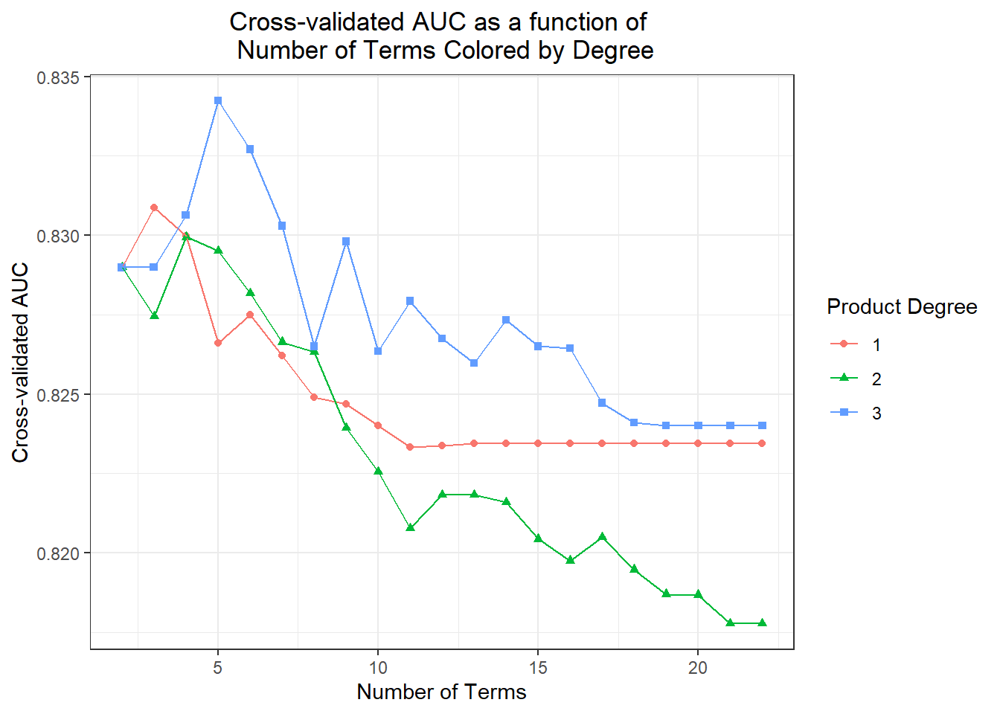
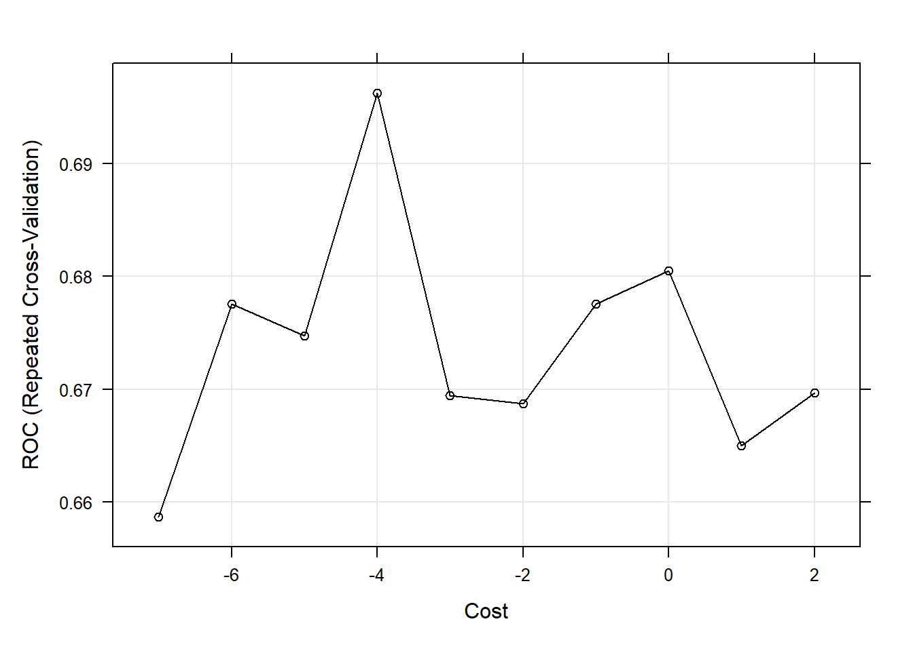
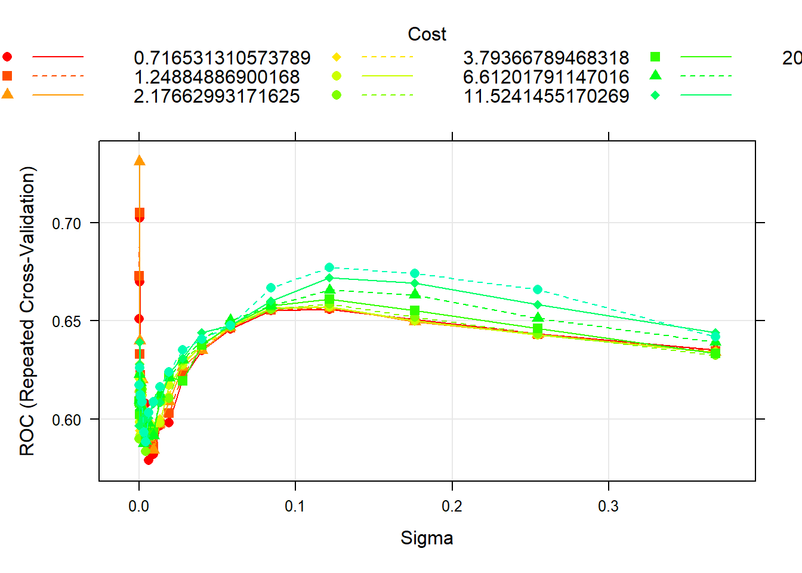
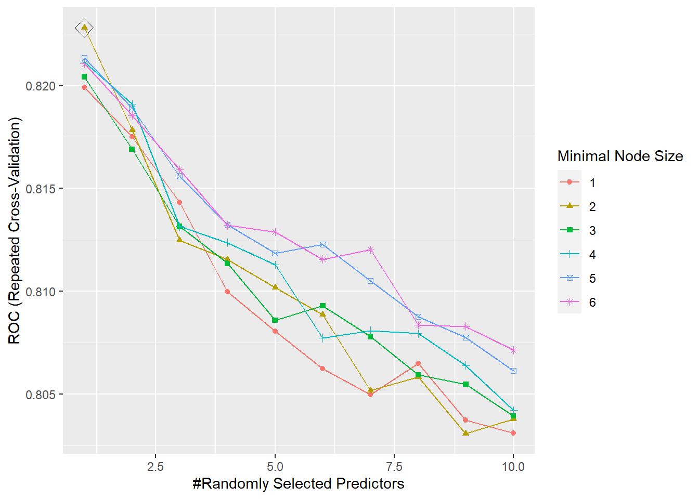

For our project our team chose to use the stroke prediction dataset from kaggle. Stroke is a disease that affects the arteries leading to and within the brain. It is the No. 5 cause of death and a leading cause of disability in the United States. Our motivation was to use this dataset to help identify key indicators that lead to strokes, since many are preventable. The questions we are trying to answer using this dataset are: 1) What are the key indicators or risk factors that lead to stroke occurrence? 2) Which classification model performs best in predicting these key indicators?
To properly analyze the data and build models to make predictions, the first step is to clean the data. The vast majority of the data was already fairly clean and ready for analysis, but we began by reading in the data, cleaning variable names, making categorical data factors, and making continuous data of type numeric. We also decided to exclude the variable “id” since it will not be relevant to our analysis.
The resulting dataset contains 5110 patient records and 11 columns. The dependent variable is the binary variable “stroke” with response values “Yes” and “No”. Other variables include: gender, age, hypertension, heart disease, ever been married, work type, residence type, average glucose level, BMI and smoking status. A detailed list of all the variables in the dataset and their corresponding levels are available in the appendix.
To create a graphical summary of the numeric data, we used featurePlot. Note that to produce the density plots for this dataset we need to exclude the categorical variables, so they were removed. 
From the plots, we can see that the distribution of BMI and average glucose level for patients who experienced a stroke, versus patients who didn’t are fairly similar. However, the distribution of age across the two groups is fairly different. Patients who experienced a stroke tended to be of a higher age.
To visualize the categorical variables, we decided to create plots of the relative proportion of variable levels faceted by stroke occurrence. These plots help visualize any noticeable differences in the distribution of the categorical variables by stroke type.

From the visualizations, we can see that among those who experienced strokes: a noticeably higher proportion of individuals had hypertension, heart disease, have ever been married, have formerly smoked or smoke currently. These variables could be potential indicators of stroke occurrence in the models.
To begin the modeling process, we split the data into training (75%) and test (25%) data. Since all the remaining predictors in the dataset are potential risk factors for strokes, we decided to include them in all of the following models.
We can examine how many rows contain missing data in the training and test datasets.
There are 152 rows in the training data containing missing values, and there are 49 rows in the test data containing missing values.
We apply the k nearest neighbor (k = 5) method for imputation where we assume any missing data is missing at random.
The training data now contains 3833 rows. The test data now contains 1277 rows.
The resampling method we used for all of the models is as follows: k-fold cross validation, two class summary (since the ROC curve is only for two classes), and classProbs = T, since AUC/ROC is the evaluation criteria.
The first model we fit to the dataset was Penalized Logistic Regression. Some assumptions of logistic regression include requiring the observations to be independent of each other, little or no multicollinearity among independent variables, and linearity of independent variables and log odds. These assumptions are also limitations of the model.
The tuning parameter in the penalty term of the model controls its flexibility. We decided to test a grid of tuning parameters. For alpha, since we wanted to use the elastic net method, we created a sequence from 0 to 1. For lambda, we created a sequence of numbers to test different values. The model then selects optimal values from the grid which are: alpha = 0.45 and lambda = 0.0140853. To display this visually, we created a plot of the model AUC for various tuning parameters in the grid. This plot can be viewed in the appendix.
4 predictors are included in the final model, as seen when the coefficients are extracted.
| Final Model Coefficients | |
|---|---|
| (Intercept) | -3.4650850 |
| age | 0.9015004 |
| hypertensionYes | 0.2912709 |
| heart_diseaseYes | 0.4148165 |
| avg_glucose_level | 0.1725724 |
These include age, having hypertension, having heart disease and average glucose level. This suggests they play important roles in predicting the response.
Next, we trained a MARS model on the imputed training data.
The MARS model has two tuning parameters: degree and nprune. Degree is the degree of interaction and nprune is the number of retained terms. We decided to test a grid of tuning parameters. The value of degree that maximizes the cross-validated AUC is 3, and the value of nprune that maximizes the cross-validated AUC is 5. The cross-validation plot can be viewed in the appendix.
The model that maximizes the cross-validated AUC can be viewed in the appendix.
A limitation of MARS models is that they can suffer from high variance.
The next model we fit to the imputed training data was a Support Vector Machine with a Linear Kernel. An assumption of the model is that the data is linearly separable. This is also a limitation of the model, as they don’t perform well when this isn’t the case.
The model contains a tuning parameter C, also known as Cost, that determines the possible misclassifications. It essentially imposes a penalty to the model for making an error: the higher the value of C, the less likely it is that the SVM algorithm will misclassify a point. We decided to test a grid of tuning parameters for C. The model then selects the optimal value from the grid which maximizes the model AUC. That value is C = 0.0183156. To display this visually, we created a plot of the model AUC for various values of the tuning parameter in the grid. This plot can be viewed in the appendix.
The final SVM with a linear kernel that maximizes the cross-validated AUC needed 421 support vectors to fit the line. This model can be viewed in the appendix.
We then trained a Support Vector Machine with a Radial Kernel on the imputed training data.
The model has two tuning parameters: C and sigma. C quantifies the cost of misclassification and sigma is related to the flexibility of the decision boundary. We decided to test a grid of tuning parameters. The values of C and sigma that maximize the cross-validated AUC are 0.411 and 3.4^{-4}.The cross-validation plot can be viewed in the appendix.
The final SVM with a radial kernel that maximizes the cross-validated AUC needed 387 support vectors to fit the line. This model can be viewed in the appendix.
A limitation of SVMs is the black box nature of these functions. The use of kernels to separate the data makes them difficult to interpret. SVMs also do not directly provide probability estimates.
For our final model, we trained a Random Forest model on the imputed training data.
The tuning parameters for the model are mtry, splitrule, and min.node.size. For the splitrule we specified “gini” which corresponds to the gini index, since this is a classification problem. We then decided to test a grid of tuning parameters for mtry and min.node.size. mtry is the number of randomly selected predictors at each cut in the tree. We created a grid from 1 to 10, where 10 is the number of predictors in the dataset. min.node.size controls the size of the tree, so we created a sequence of numbers to test different values. The parameter is the minimum number of observations in a terminal node. The model then selects optimal values from the grid which are: mtry = 1 and min.node.size = 2. The cross-validation plot can be viewed in the appendix.
A limitation of random forests is that it can overfit datasets that are particularly noisy. In addition, for data including categorical predictor variables with different number of levels, random forests are biased in favor of those predictors with more levels.
To decide which model we will use to predict the response variable, let’s use the AUC to compare model performance.
| model | AUC |
|---|---|
| Penalized Logistic Regression | 0.841 |
| MARS | 0.834 |
| Random Forest | 0.823 |
| SVM (Radial Kernel) | 0.731 |
| SVM (Linear Kernel) | 0.696 |
The penalized logistic regression model has the highest cross-validated AUC and will be used as the final model.
Let’s get its AUC on the imputed test dataset and plot the ROC curve.

We will now make a Confusion Matrix
| No | Yes | |
|---|---|---|
| No | 1215 | 62 |
| Yes | 0 | 0 |
From the confusion matrix we have a 95.1448708% accuracy, and thus a testing error rate of 4.86%. From the table, we can see that our model is not able to actually detect stroke cases at a 50% threshold. We should consult with experts on stroke to determine what threshold to use. The full confusion matrix is available in the appendix.
The main takeaways from this report are that age, hypertension, heart disease and average glucose level each have a positive relationship with stroke. In considering the cross-validated model performance of penalized logistic regression, MARS, support vector machine with a linear kernel, support vector machine with a radial kernel, and random forest, penalized logistic regression has the highest cross-validated model performance. Additionally, for this model, the threshold needs to be adjusted, in consultation with experts on stroke, to detect stroke cases as the prevalence of stroke in this dataset is low. Individuals cannot control aging, but they can focus on diminishing other risk factors such as hypertension, heart disease and average glucose level, with methods such as a healthy diet, frequent exercise, and stress reduction. These results were also largely expected due to significant scientific research conducted on risk factors for strokes.


| term | estimate |
|---|---|
| (Intercept) | -3.8754171 |
| h(age-0.11223) * h(avg_glucose_level- -0.239578) | 0.5714259 |
| h(age-0.11223) * hypertensionYes * h(-0.239578-avg_glucose_level) | 2.0946522 |
| h(age-0.11223) * work_typeSelf-employed * h(avg_glucose_level- -0.239578) | -0.3446909 |
| h(age-0.11223) * h(1.30143-bmi) | 0.7516836 |

## Support Vector Machine object of class "ksvm"
##
## SV type: C-svc (classification)
## parameter : cost C = 0.0183156388887342
##
## Linear (vanilla) kernel function.
##
## Number of Support Vectors : 421
##
## Objective Function Value : -6.85
## Training error : 0.048787
## Probability model included.
## Support Vector Machine object of class "ksvm"
##
## SV type: C-svc (classification)
## parameter : cost C = 0.411112290507187
##
## Gaussian Radial Basis kernel function.
## Hyperparameter : sigma = 0.000335462627902512
##
## Number of Support Vectors : 387
##
## Objective Function Value : -153.7554
## Training error : 0.048787
## Probability model included.
test.pred.prob <- predict(model.glmn, newdata = testData_pp[,1:10],
type = "prob")[,2]
test.pred <- rep("No",length(test.pred.prob))
test.pred[test.pred.prob > 0.5] <- "Yes"
test.pred <- factor(test.pred,c("No","Yes"))
confusionMatrix(data = test.pred,
reference = testData_pp$stroke,
positive = "Yes")## Confusion Matrix and Statistics
##
## Reference
## Prediction No Yes
## No 1215 62
## Yes 0 0
##
## Accuracy : 0.9514
## 95% CI : (0.9382, 0.9626)
## No Information Rate : 0.9514
## P-Value [Acc > NIR] : 0.5337
##
## Kappa : 0
##
## Mcnemar's Test P-Value : 9.408e-15
##
## Sensitivity : 0.00000
## Specificity : 1.00000
## Pos Pred Value : NaN
## Neg Pred Value : 0.95145
## Prevalence : 0.04855
## Detection Rate : 0.00000
## Detection Prevalence : 0.00000
## Balanced Accuracy : 0.50000
##
## 'Positive' Class : Yes
##